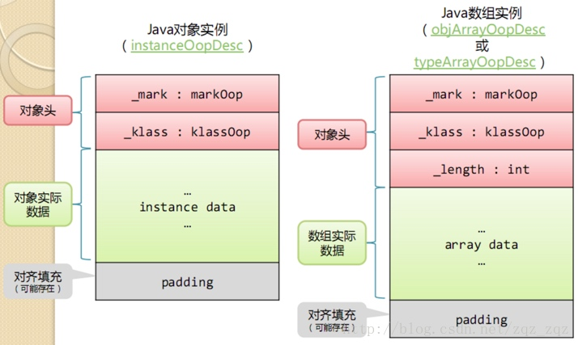

JVM内存模型
也是JVM运行时数据区域。

Java线程内存模型。
是一种内存规范。

主内存与线程私有内存
CPU三级缓存
MESI协议
Java操作内存的8个方法
synchronized 与 volitale
Java对象结构

对象在内存中存储的布局可以分为3块区域：
- 对象头 Header
- 实例数据Instance Data
- 对齐填充。
####对象头
对象头包括两部分信息，
第一部分 Mark Word，用于存储对象自身的运行时数据，主要有
- 哈希码 HashCode
- GC分代年龄
- 锁状态标志
- 线程持有的锁
- 偏向线程ID
- 偏向时间戳
这部分数据的长度在32位和64位的虚拟机中分别为32bit、64bit，也就是说Mark Word这部分占用内存8个字节。
第二部分是类型指针，即这个对象指向它的类元数据的指针，虚拟机通过这个指针来确定这个对象是哪个类的实例。
类型指针占用内存4个字节。
####实例数据
是对象真真存储的有效信息，也是程序代码中所定义的各种类型的字段内容。
包含从父类继承下来的和子类中定义的。
存储顺序会受到虚拟机分配策略参数和字段在Java源码中定义顺序的影响。
HotSpot虚拟机默认的分配策略为
longs/doubles
ints
shorts/charts
bytes/booleans
oops（Ordinary Object Pointers）
相同宽度的字段总是被分配到一起。
####对齐填充
HotSpot VM的自动内存管理系统要求对象起始地址必须是8字节的整数倍，对象的大小必须是8字节的整数倍。
因此，当该对象的占用内存不是8的整数倍的时候需要对齐填充来补全。
Object o = new Object()使用了多少内存?
Mark Word 8
Class Pointer 4
Instance Data 0
对齐 4
总共16个字节。